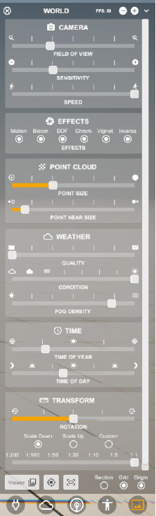
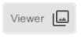
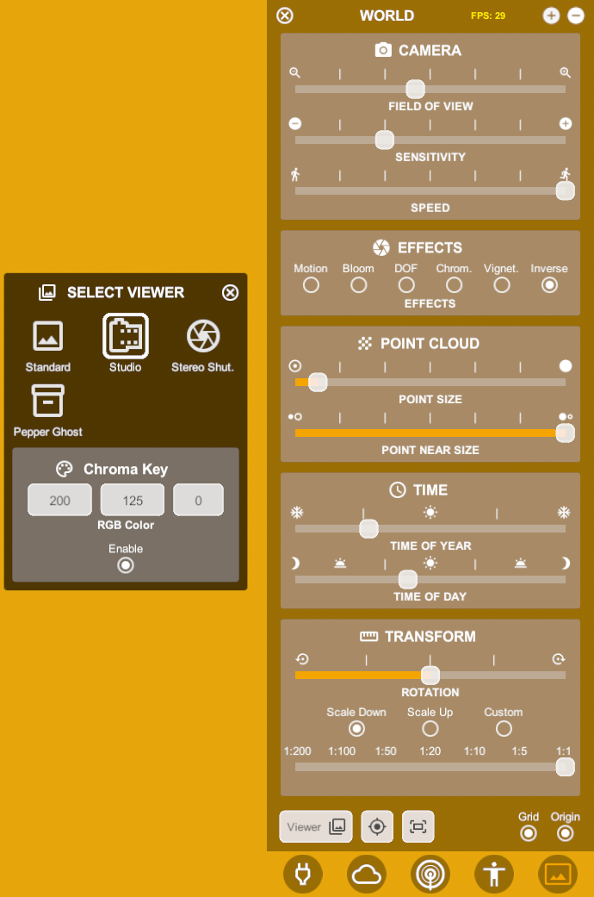
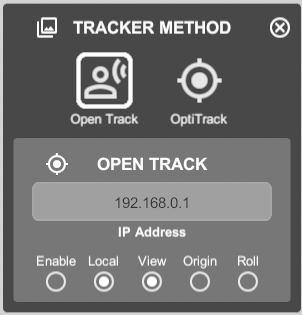
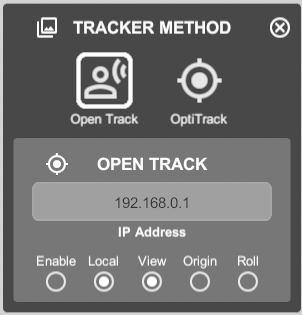
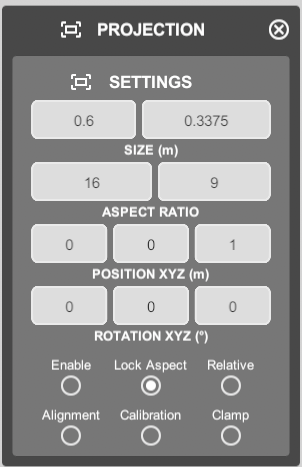

5. World Menu¶
Camera
Field of view - controls the field of view
Sensitivity - mouse sensitivity
Speed - movement speed
Note: turn slow when someone is following you through the project
Effects - turning them off increases performance
Motion = motion blur
Bloom = makes bright spots bleed at the edges, simulating a real camera
DOF = depth of field - distance between closest and furthest part of an image that are in focus
Chrom = chromatic effect - adds artifacts to the image, simulating a poor len
Vignet = darkening on the edges of images, simulating real cameras
Inverse = clipping/sectioning leaves a ghost of the hidden geometry
Point Cloud
Point Size
Point near size = increases point sizes near you
Note: point clouds are disabled in IOS/Android viewers because they require a lot of computing power
Weather
Quality = resolution of the sky, above lv3 not significantly better
Condition = types of weather: rainy, foggy and sunny
Fog density = can hide the horizon but also your model
Note: for better performance: turn weather to sunny, fog off, quality to lowest
Time
Transform
Rotation = rotates all models around the 0 point
Scale
Select Viewer


Standard
Studio = Studio conditions, no weather or horizon, neutral reflections, color can be set with RGB values
Pepper Ghost = displays the model in a virtual box
Stereo Shutter = for active 3D glasses
Augmented Reality (AR) = Available on IOs, Android, Oculus. Displays virtual model in a real environment
{kind=link}
Tracking
 

Tracker Method = for using Pepper Ghost viewer mode
Tracking is done with a camera and the external software: Optitrack
Note for VR
{kind=link}
in the Vr-Viewer the icon opens a different menu that lets you position the X,Y = 0 position and the orientation of it
this is very helpful to precisely place a model in real space
Projection
Projection = screen size settings - you can also edit the overall scale and height of the horizon
Grid = toggles the default floor
Origin = toggles the origin point
{kind=link}
Video tutorials: